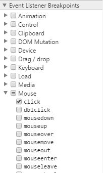

Breakpoint on event listeners is a quick way of allowing you to ensure breakpoints are always hit when a user does a certain event. For example, mouseclick, key up.
There is a lot of events to choose from, I find this to be of limited use as I usually don't have many events bound to the one element and it requires me to know what events will trigger on the element. You can select all and it will highlight which event has been fired, even so, I find I use this extremely rarely.
